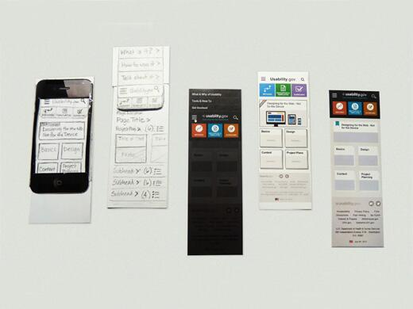

A prototype is a draft version of a product that allows you to explore your ideas and show the intention behind a feature or the overall design concept to users before investing time and money into development. A prototype can be anything from paper drawings (low-fidelity) to something that allows click-through of a few pieces of content to a fully functioning site (high-fidelity).
Benefits of Prototypes
It is much cheaper to change a product early in the development process than to make change after you develop the site. Therefore, you should consider building prototypes early in the process. Prototyping allow you to gather feedback from users while you are still planning and designing your Web site.
Nielsen  has found that the biggest improvements in user experience come from gathering usability data as early as possible. He notes that it’s cheaper to make changes before any code has been written than to wait until after the implementation is complete.
has found that the biggest improvements in user experience come from gathering usability data as early as possible. He notes that it’s cheaper to make changes before any code has been written than to wait until after the implementation is complete.
The Difference between Sketches and Prototypes
Although the difference between sketches, wireframes, and prototypes isn’t always clear, there are differences in their intentions. Bill Buxton, in his book Sketching User Experiences, provides a list of descriptors that help explain the differences:
| Sketch | Prototype |
|---|---|
| Evocative | Didactic |
| Suggest | Describe |
| Explore | Refine |
| Question | Answer |
| Propose | Test |
| Provoke | Resolve |
| Tentative | Specific |
| Non-committal | Depiction |
Tracy Lepore further defines the differences by visually showing the continuum from sketch to design by depicting the relationships between what the design is trying to communicate, the amount of iteration between phases, and the fidelity of the design.
High-Fidelity and Low-Fidelity Prototyping
There is an on-going debate about using low versus high fidelity prototyping and how much a prototype should resemble the final version of your design. Both have been found to be basically equivalent in finding usability issues (Walker et al 2002). With that said, there are things to consider when trying to decide which option is best for your project:
- Low-fidelity prototypes are often paper-based and do not allow user interactions. They range from a series of hand-drawn mock-ups to printouts. In theory, low-fidelity sketches are quicker to create. Low-fidelity prototypes are helpful in enabling early visualization of alternative design solutions, which helps provoke innovation and improvement. An additional advantage to this approach is that when using rough sketches, users may feel more comfortable suggesting changes.
- High-fidelity prototypes are computer-based, and usually allow realistic (mouse-keyboard) user interactions. High-fidelity prototypes take you as close as possible to a true representation of the user interface. High-fidelity prototypes are assumed to be much more effective in collecting true human performance data (e.g., time to complete a task), and in demonstrating actual products to clients, management, and others.
Creating Paper Prototypes
Paper-based prototyping is the quickest way to get feedback on your preliminary site information architecture, design, and content. Paper prototypes are easy to create and require only paper, scissors and sticky notes.
Use one piece of paper for each Web page you create and then have users try them out in a usability test. Users indicate where they want to click to find the information and you change the page to show that screen.

The process helps you to gather feedback early in the design process, make changes quickly, and improve your initial designs.
References
-
A Case Study of How Interface Sketches, Scenarios and Computer Prototypes Structure Stakeholder Meetings by Johanson and Arvola
- M. Walker, L. Takayama and J.A. Landay, High-fidelity or low-fidelity, paper or computer? Choosing attributes when testing web prototypes, Proceedings of the Human Factors and Ergonomics Society 46th Annual Meeting, September 29–October 4, 2002, Baltimore, USA, HFES, Santa Monica (2002), pp. 661–665.
- Paper Prototypes Work as Well as Software Prototypes